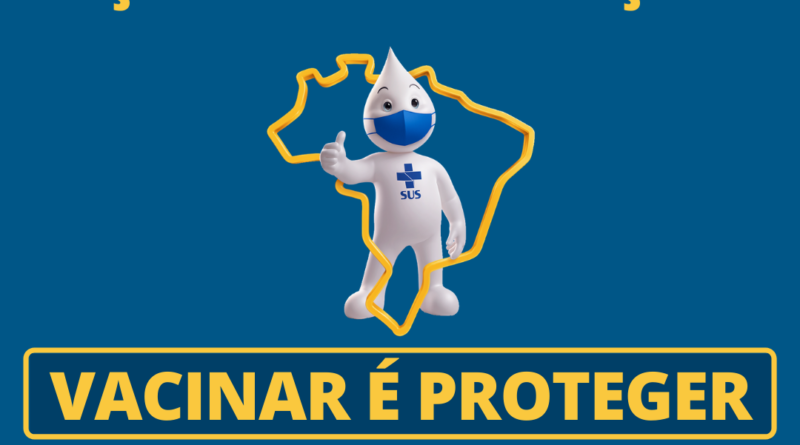
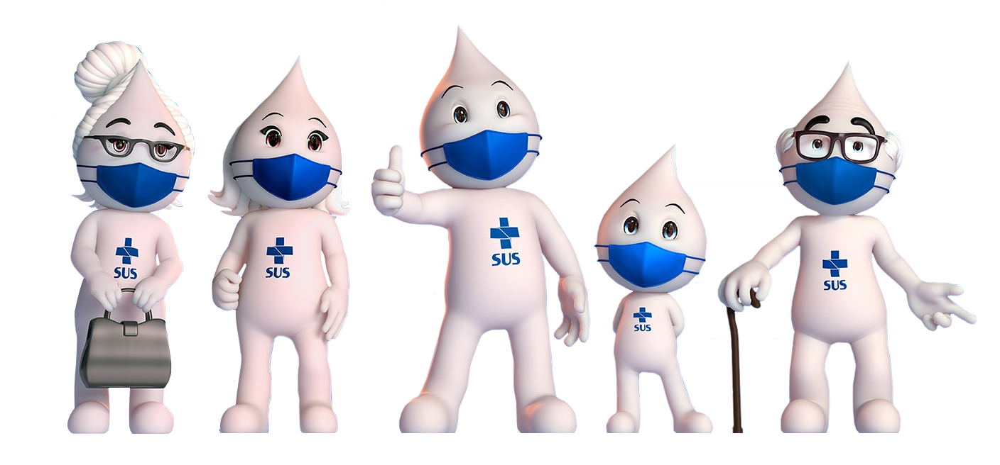

INFOVACINAS
"A vacinação é uma das maneiras mais eficazes de proteger a sua saúde e a da comunidade em que vivemos".
Este site se trata de um projeto de extensão da faculdade Unopar - Anhaguera, um site desenvolvido para ajudar a comunidade com as informações sobre todas as vacinas que fazem parte do calendário nacional de vacinas.
Este projeto é focado no objetivo 3 do desenvolvimento sustentável da Onu, que visa a saúde e o bem-estar da população.
A vacinação é reconhecida como uma das mais eficazes estratégias para preservar a saúde da população e fortalecer uma sociedade saudável e resistente. Além de prevenir doenças graves, a imunização contribui para reduzir a disseminação desses agentes infecciosos na comunidade, protegendo aqueles que não podem ser vacinados por motivos de saúde.
A política de vacinação é responsabilidade do Programa Nacional de Imunizações (PNI) do Ministério da Saúde. Estabelecido em 1973, o PNI desempenha um papel fundamental na promoção da saúde da população brasileira. Por meio do programa, o governo federal disponibiliza gratuitamente no Sistema Único de Saúde - SUS 47 imunobiológicos: 30 vacinas, 13 soros e 4 imunoglobulinas. Essas vacinas incluem tanto as presentes no calendário nacional de vacinação quanto as indicadas para grupos em condições clínicas especiais, como pessoas com HIV ou indivíduos em tratamento de algumas doenças (câncer, insuficiência renal, entre outras), aplicadas nos Centros de Referência para Imunobiológicos Especiais (CRIE)Centros, e inclui também as vacinas COVID-19 e outras administradas em situações específicas.

Criança
Ao nascer
Vacina BCG (Dose única).
Doenças evitadas: formas graves da tuberculose (miliar e meníngea).
Vacina Hepatite B (recombinante HB).
Doenças evitadas: Hepatite B.
2 meses
Vacina adsorvida Difteria, Tétano, Pertussis, Hepatite B (recombinante) e Haemophilus influenzae B (conjugada) - (Penta) (1ª dose).
Doenças evitadas: Difteria, Tétano, Coqueluche, Hepatite B e infecções causadas pelo Haemophilus influenzae B.
Vacina poliomielite 1, 2 e 3 (inativada) - (VIP) (1ª dose).
Doenças evitadas: Poliomielite.
Vacina pneumocócica 10-valente (Conjugada) - (Pneumo 10) (1ª dose).
Doenças evitadas: infecções invasivas (como meningite e pneumonia) e otite média aguda, causadas pelos 10 sorotipos de Streptococus pneumoniae.
Vacina rotavírus humano G1P1 [8] (atenuada) - (VRH) (1ª dose).
Doenças evitadas: diarreia por rotavírus (Gastroenterites).
3 meses
Vacina meningocócica C (conjugada) - (Meningo C) (1ª dose).
Doenças evitadas: doença invasiva causada pela Neisseria meningitidis do sorogrupo C
4 meses
Vacina adsorvida Difteria, Tétano, pertussis, Hepatite B (recombinante) e Haemophilus influenzae B (conjugada) - (Penta) (2ª dose).
Doenças evitadas: Difteria, Tétano, Coqueluche, Hepatite B e infecções causadas pelo Haemophilus influenzae B.
Vacina poliomielite 1, 2 e 3 (inativada) - (VIP) (2ª dose).
Doenças evitadas: Poliomielite.
Vacina pneumocócica 10-valente (Conjugada) - (Pneumo 10) (2ª dose).
Doenças evitadas: infecções invasivas (como meningite e pneumonia ) e otite média aguda, causadas pelos 10 sorotipos Streptococus pneumoniae.
Vacina rotavírus humano G1P1 [8] (atenuada) - (VRH) (2ª dose).
Doenças evitadas: diarreia por rotavírus (Gastroenterites).
5 meses
Vacina meningocócica C (conjugada) - (Meningo C) (2ª dose).
Doenças evitadas: doença invasiva causada pela Neisseria meningitidis do sorogrupo C.
6 meses
Vacina adsorvida Difteria, Tétano, pertussis, Hepatite B (recombinante) e Haemophilus influenzae B (conjugada) - (Penta) (3ª dose).
Doenças evitadas: Difteria, Tétano, Coqueluche, Hepatite B e infecções causadas pelo Haemophilus influenzae B.
Vacina poliomielite 1, 2 e 3 (inativada) - (VIP) (3ª dose).
Doenças evitadas: Poliomielite.
Vacina Covid-19 (1ª dose).
Doenças evitadas: as formas graves e complicações pela covid-19.
Obs.: A vacina Covid-19 está recomendada com esquema de duas doses (aos 6 e 7 meses de idade), respeitando os intervalos mínimos recomendados (4 semanas entre a 1ª e 2ª dose). Caso não tenha iniciado e/ou completado o esquema primário até os 7 meses de idade, a vacina poderá ser administrada até 4 anos, 11 meses e 29 dias, conforme histórico vacinal. Para indivíduos imunocomprometidos, o esquema vacinal são de três doses (aos 6, 7 e 9 meses).
7 meses
Vacina Covid-19 (2ª dose).
Doenças evitadas: as formas graves e complicações pela covid-19.
Obs.: A vacina Covid-19 está recomendada com esquema de duas doses (aos 6 e 7 meses de idade), respeitando os intervalos mínimos recomendados (4 semanas entre a 1ª e 2ª dose). Caso não tenha iniciado e/ou completado o esquema primário até os 7 meses de idade, a vacina poderá ser administrada até 4 anos, 11 meses e 29 dias, conforme histórico vacinal. Para indivíduos imunocomprometidos, o esquema vacinal são de três doses (aos 6, 7 e 9 meses)
9 meses
Vacina Febre Amarela (atenuada) - (FA) (1 dose).
Doenças evitadas: Febre Amarela.
12 meses
Vacina pneumocócica 10-valente (Conjugada) - (Pneumo 10) (Reforço).
Doenças evitadas: infecções invasivas (como meninigite, pneumonia e otite média aguda), causadas pelos 10 sorotipos Streptococus pneumoniae.
Vacina meningocócica C (conjugada) - (Meningo C) (Reforço).
Doenças evitadas: doença invasiva causada pela Neisseria meningitidis do sorogrupo C.
Vacina Sarampo, Caxumba, Rubéola (Tríplice viral) (1ª dose).
Doenças evitadas: Sarampo, Caxumba e Rubéola.
15 meses
Vacina adsorvida Difteria, Tétano e pertussis (DTP) (1º reforço).
Doenças evitadas: Difteria, Tétano, Coqueluche.
Vacina poliomielite 1, 2 e 3 (inativada) - (VIP) (Reforço).
Doenças evitadas: Poliomielite.
Vacina adsorvida Hepatite A (HA - inativada) (1 dose).
Doenças evitadas: Hepatite A.
Vacina Tetra viral (1 dose).
Doenças evitadas: Sarampo, Caxumba, Rubéola e varicela.
4 anos
Vacina adsorvida Difteria, Tétano e pertussis (DTP) (2º reforço).
Doenças evitadas: Difteria, Tétano, Coqueluche.
Vacina Febre Amarela (atenuada) (Reforço).
Doenças evitadas: Febre Amarela.
Vacina varicela (monovalente) - (Varicela) (1 dose).
Doenças evitadas: Varicela.
5 anos
Vacina Febre Amarela (atenuada) - (FA) (1 dose, caso a criança não tenha recebido as duas doses recomendadas antes de completar 5 anos).
Doenças evitadas: Febre Amarela.
Vacina pneumocócica 23-valente - (Pneumo 23) (2 doses, a 2ª dose deve ser feita 5 anos após a 1ª dose).
Doenças evitadas: infecções invasivas pelo pneumococo na população indígena.
Obs.: Para a população indígena a partir de 5 anos de idade, sem histórico vacinal com vacinas pneumocócicas conjugadas.
7 anos
Vacina Difteria e Tétano (dT) - (Iniciar ou completar três doses, de acordo com situação vacinal | Reforço a cada 10 anos, ou a cada 5 anos em caso de ferimentos graves e contatos de difteria).
Doenças evitadas: Difteria e Tétano.
9 e 10 anos
Vacina HPV Papilomavírus humano 6, 11, 16 e 18 (HPV4 - recombinante) (Dose única).
Doenças evitadas: Papilomavírus Humano 6, 11, 16 e 18.
Obs.: Para vítimas de abuso sexual, de 9 a 14 anos a recomendação é de duas doses. De 15 a 45, a recomendação é de três doses, considerando o histórico vacinal contra o HPV. Pessoas com HIV/aids, transplantadas de órgãos sólidos e de medula óssea, pacientes com câncer e aqueles com papilomatose respiratória recorrente (PPR) devem tomar três doses, com prescrição médica. Para menores de 18 anos, é necessário consentimento dos pais ou responsáveis para a vacinação contra o HPV como tratamento adjuvante da PPR. O intervalo entre as doses deve ser confirmado na UBS.
Baixar PDF
Adolescente
A qualquer tempo
Vacina Hepatite B recombinante (HB) (Iniciar ou completar três doses, de acordo com situação vacinal).
Doenças evitadas: Hepatite B.
Vacina Difteria e Tétano (dT) (Iniciar ou completar três doses, de acordo com situação vacinal | Reforço a cada 10 anos, ou a cada 5 anos em caso de ferimentos graves ou se contatos de difteria).
Doenças evitadas: Difteria e Tétano.
Vacina Febre Amarela (VFA - atenuada) (Dose única caso não tenha recebido nenhuma dose até os 5 anos ou reforçar, caso a pessoa tenha recebido uma dose da vacina antes de completar 5 anos de idade).
Doenças evitadas: Febre Amarela.
Vacina Sarampo, Caxumba e Rubéola (Tríplice viral) (Iniciar ou completar duas doses, de acordo com a situação vacinal).
Doenças evitadas: Sarampo, Caxumba e Rubéola.
11 a 14 anos
Vacina HPV Papilomavírus humano 6, 11, 16 e 18 (HPV4 - recombinante) (Dose única | Para os adolescentes não vacinados, de 15 a 19 anos de idade, deve-se realizar estratégias de resgate para vacinação de dose única.).
Doenças evitadas: Papilomavírus Humano 6, 11, 16 e 18.
Obs.: Para vítimas de abuso sexual, de 9 a 14 anos a recomendação é de duas doses. De 15 a 45, a recomendação é de três doses, considerando o histórico vacinal contra o HPV. Pessoas com HIV/aids, transplantadas de órgãos sólidos e de medula óssea, pacientes com câncer e aqueles com papilomatose respiratória recorrente (PPR) devem tomar três doses, com prescrição médica. Para menores de 18 anos, é necessário consentimento dos pais ou responsáveis para a vacinação contra o HPV como tratamento adjuvante da PPR. O intervalo entre as doses deve ser confirmado na UBS.
Vacina meningocócica ACWY (MenACWY- Conjugada) (Uma dose).
Doenças evitadas: meningite meningocócica sorogrupos A, C, W e Y.
Baixar PDF
Adulto e Idoso
Idade adulta - a qualquer tempo
Vacina Hepatite B (HB - recombinante) (três doses, de acordo com histórico vacinal).
Doenças evitadas: Hepatite B.
Vacina Difteria e Tétano (dT) (três doses, de acordo com histórico vacinal | Reforço a cada 10 anos, ou a cada 5 anos em caso de ferimentos graves ou se contatos de difteria).
Doenças evitadas: Difteria e Tétano.
Vacina Febre Amarela (VFA - atenuada) (Dose única caso não tenha recebido nenhuma dose até os 5 anos ou reforçar, caso a pessoa tenha recebido uma dose da vacina antes de completar 5 anos de idade).
Doenças evitadas: Febre Amarela.
Vacina HPV Papilomavírus humano 6, 11, 16 e 18 (HPV4 - recombinante).
Doenças evitadas: Papilomavírus Humano 6, 11, 16 e 18.
Obs.: Para vítimas de abuso sexual, de 9 a 14 anos a recomendação é de duas doses. De 15 a 45, a recomendação é de três doses, considerando o histórico vacinal contra o HPV. Pessoas com HIV/aids, transplantadas de órgãos sólidos e de medula óssea, pacientes com câncer e aqueles com papilomatose respiratória recorrente (PPR) devem tomar três doses, com prescrição médica. Para menores de 18 anos, é necessário consentimento dos pais ou responsáveis para a vacinação contra o HPV como tratamento adjuvante da PPR. O intervalo entre as doses deve ser confirmado na UBS.
A partir de 18 anos
Vacina Difteria, Tétano, Pertussis (dTpa - acelular) (Uma dose - Reforço a cada 10 ou 5 anos, em caso de ferimentos graves | Recomendadas para profissionais da saúde, parteiras tradicionais e estagiários da saúde, que atuam em maternidades e unidades de internação neonatal - UTI/UCI convencional e UCI Canguru, atendendo recém-nascidos).
Doenças evitadas: Difteria, Tétano e Coqueluche
20 a 29 anos
Vacina Tríplice viral (Duas doses).
Doenças evitadas: Sarampo, Caxumba e Rubéola
30 a 59 anos
Vacina Tríplice viral (Uma dose - Verificar situação vacinal anterior).
Doenças evitadas: Sarampo, Caxumba e Rubéola
A partir de 60 anos
Vacina Hepatite B (HB - recombinante) (três doses, de acordo com histórico vacinal).
Doenças evitadas: Hepatite B.
Vacina Difteria e Tétano (dT) (três doses, de acordo com histórico vacinal | Reforço a cada 10 anos ou a cada 5 anos em caso de ferimentos graves).
Doenças evitadas: Difteria e Tétano.
Vacina Febre Amarela (VFA - atenuada).
Doenças evitadas: Febre Amarela.
Obs.: Pessoas a partir de 60 anos, que nunca foram vacinadas ou sem comprovante de vacinação, o serviço de saúde deverá avaliar a pertinência e o risco X benefício da vacinação.
Vacina Difteria, Tétano, Pertussis (dTpa - acelular) (Uma dose - Reforço a cada 10 ou 5 anos, em caso de ferimentos graves | Recomendadas para profissionais da saúde, parteiras tradicionais e estagiários da saúde, que atuam em maternidades e unidades de internação neonatal - UTI/UCI convencional e UCI Canguru, atendendo recém-nascidos)
Doenças evitadas: Difteria, Tétano e Coqueluche
Baixar PDF
Gestantes
A qualquer tempo no pré-natal
Vacina Hepatite B (HB - recombinante) (Iniciar ou completar 3 doses).
Doenças evitadas: Hepatite B.
Vacina Difteria e Tétano (dT) (Iniciar ou completar o esquema de 3 doses com vacinas contendo os toxoides de difteria e tétano).
Doenças evitadas: Difteria e Tétano.
Obs.: Observar a indicação da vacina dTpa a partir da 20ª semana da gestação.
20ª semana de gravidez e puérperas até 45 dias
Vacina Difteria, Tétano, Pertussis (dTpa - acelular) (1 dose a partir da 20ª semana, a cada gestação).
Doenças evitadas: Difteria, Tétano e Coqueluche.
Obs.: Se não administrada durante o período gestacional, a dose da vacina dTpa deve ser administrada no puerpério o mais breve possível, até 45 dias pós-parto. A indicação de uso da vacina dTpa, a cada gestação, mesmo para as gestantes que possuem o esquema vacinal completo contra essas doenças, tem por objetivo a prevenção contra o tétano neonatal e a coqueluche em recém-nascidos, até que o bebê possa iniciar o esquema vacinal aos 2 meses de vida.
Baixar PDF

Teleatendente: de segunda-feira
a sexta-feira, das 8h às 20h,
e aos sábados, das 8h às 18h.
